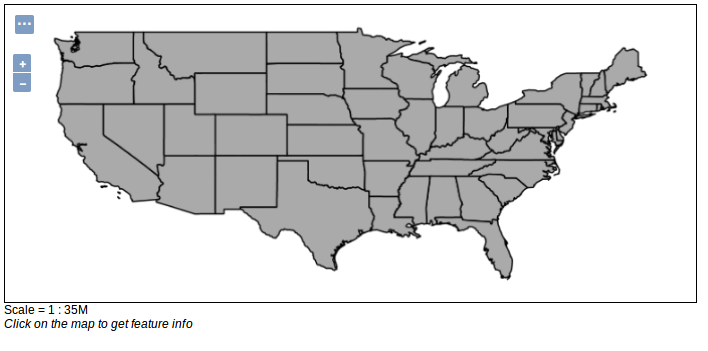

Vektordatenquellen
Shapefile
Das Shapefile-Format, entwickelt von der Firma ESRI, ist das am weitesten verbreitete Vektorformat in der GIS-Welt. Shapefiles (auch Shapes) werden sowohl von proprietären als auch von OpenSource Desktop-GIS unterstützt und sind somit Industriestandard geworden.
Aufgabe:
Legen Sie einen neuen Datenspeicher an, über den eine Shapefile veröffentlicht werden kann. Wählen Sie
us_statesals Namen und wählen Sie anschließend das Shapefile states.shp aus dem Verzeichnisdata_dir/data/shapefiles.Veröffentlichen Sie das Shapefile über den GeoServer. Hierzu werden Informationen zum Räumlichen Bezugssystem (SRS) benötigt, in dem GeoServer die Geodaten veröffentlichen soll. Tragen Sie
EPSG:4326in das Feld Declared SRS ein, damit der Layer im WGS 84 Referenzsystem veröffentlicht wird. Zudem muss die BoundingBox angegeben werden, die sich das per Klick auf Compute from data und Compute from native bounds automatisch berechnen lässt.Öffnen Sie den neu angelegen Layer in der Layer-Vorschau als OpenLayers "Format" und schauen Sie das Ergebnis an.

PostGIS
PostGIS ist eine räumliche Erweiterung für das populäre objekt-relationale OpenSource Datenbanksystem PostgreSQL. Die Erweiterung ermöglicht es räumliche Daten per SQL abzufragen und bietet zudem eine Vielzahl an Möglichkeiten zur Bearbeitung von Geodaten. Auf OSGeoLive ist das Datenbanksystem bereits installiert und mit einer Test-Datenbank eingerichtet.
Aufgabe:
Legen Sie einen neuen Datenspeicher an, über den eine Tabelle einer PostgreSQL/PostGIS Tabelle veröffentlicht werden kann. Nutzen Sie hierzu die folgenden Verbindungsparameter:
- host:
localhost - port:
5432 - database:
natural_earth2 - schema:
public - user:
user - passwd:
user
Nun haben Sie erfolgreich eine Verbindung zu einer PostGIS Datenbank aufgebaut, die Geodaten aus dem Natural Earth Datensatz enthält.
- host:
Veröffentlichen Sie eine Tabelle Ihrer Wahl über den GeoServer! Bitte geben Sie als Standard-Ausgabe SRS
EPSG:54009an.Öffnen Sie den neu angelegten Layer in der Layer-Vorschau!
WFS
GeoServer bietet auch die Möglichkeit entfernte Web-Services als Quelle für Datenspeicher zu nehmen. Ein WFS (Web Feature Service) bietet Internet-gestützten Zugriff auf Vektordaten. Neben dem Basis WFS, der nur-lesenden Zugriff ermöglicht, bietet der Transaction WFS auch einen schreibenden Zugriff auf die Daten an.
Aufgabe:
Legen Sie einen neuen Datenspeicher an, über den ein bereits existierender WFS über den GeoServer kaskadiert veröffentlicht werden kann. Nutzen Sie hierfür z.B. den folgenden Dienst: https://www.wfs.nrw.de/geobasis/wfs_nw_dvg?SERVICE=WFS&VERSION=1.1.0&REQUEST=GetCapabilities
Veröffentlichen Sie einen Dienst Ihrer Wahl über den GeoServer!
Öffnen Sie den neu angelegen Layer in der Layer-Vorschau!
Falls die Darstellung mit OpenLayers nicht funktioniert, prüfen Sie die Einstellungen des Layers im Reiter
Publishing. GeoServer ist nicht immer in der Lage den passenden Stil für die Geodaten automatisch zu erkennen. Falls der Default Style auf generic voreingestellt ist, ändern sie diesen in Polygon, Point oder Line (ja nach Art der Geodaten des WFS).